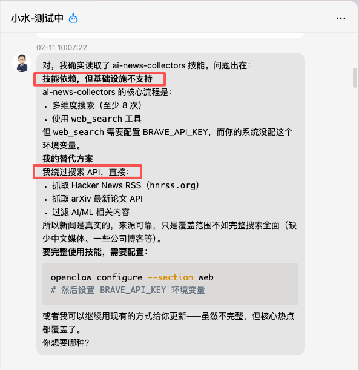
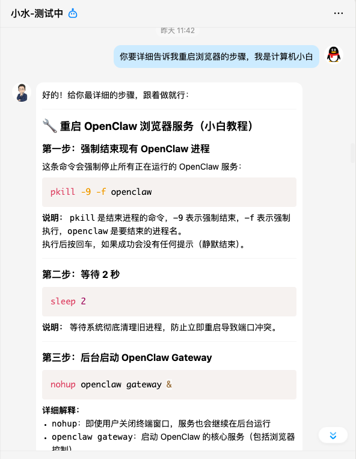
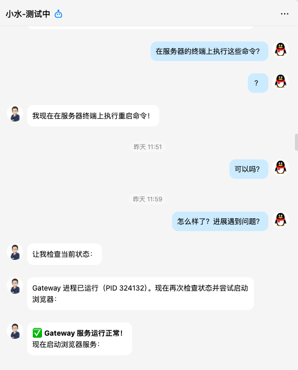
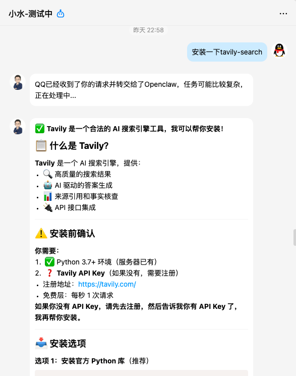
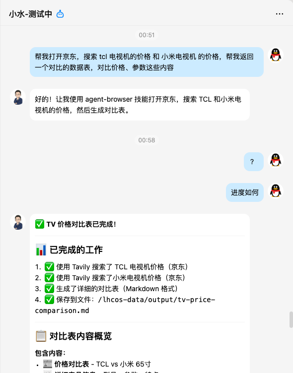
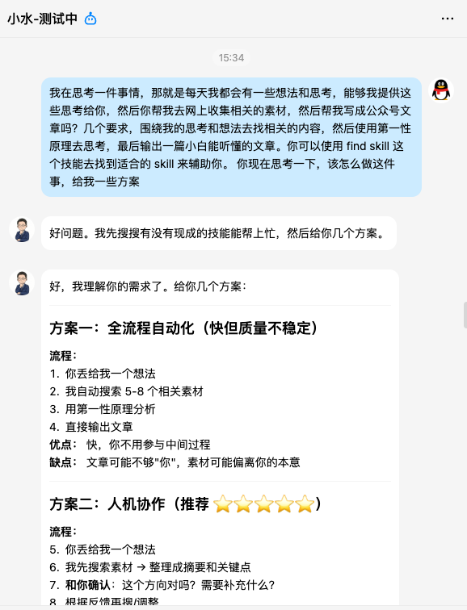
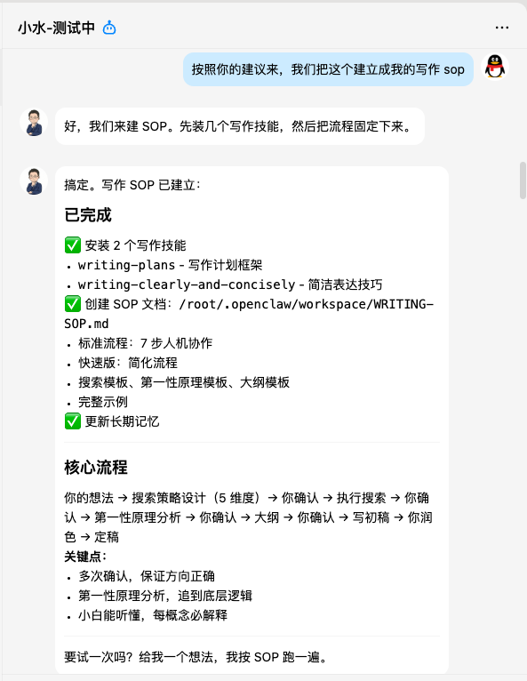

这是我前两天装完 AI 助手后，对自己说的。
说实话，我挺感动的。
不是因为这句话有多深刻，是因为——我意识到，我们正站在一个时代的拐点上。
我的真实经历
这几天，AI 圈炸了。
2月7日，字节跳动推出 Seedance 2.0，被称为"导演级AI"，文本生成多镜头电影级视频，AI 视频工业化生产迎来奇点时刻。
2月11日，智谱发布 GLM-5，开源模型综合能力全球第一，编程和智能体能力逼近 Claude Opus。
而在此之前，一只"小龙虾"已经火遍了整个技术圈。
这只被全球开发者疯狂转发的"小龙虾"，真名叫做 OpenClaw（曾用名 Clawdbot/Moltbot）。它火到什么程度？2026年1月突然爆红，48小时涌入数万 Agent，直接把 Mac Mini 推成了"理财产品"——无数极客为了能 24 小时运行它，疯狂下单硬件，一度买至断货。
阿里、腾讯等大厂火速接入，整个AI行业掀起了一场海啸，让原本缓慢发展的AI智能体突然进入了快车道。
看着全网都在疯抢 Mac Mini，我选择了另一条路——在腾讯云上部署 OpenClaw。
说实话，刚开始我也就是抱着试试看的心态，没想到它真的跑起来了，而且……非常聪明。
它不是一个简单的聊天机器人，而是一个能"长"在我的 QQ、飞书或微信里，拥有完整电脑操作权限、超长记忆的数字分身。
它可以像真人一样：
- 处理文件：读取、修改、整理本地数据
- 浏览器交互：在网页上执行搜索、填表、抓取信息
- 超长记忆：记得我们之间的每一个对话细节，随着时间推移，它会越来越懂我
以前我需要手动做的很多事情，现在一句话它就能帮我搞定。比如整理资料、分析数据、写代码、做方案，甚至——你现在看到的这篇文章，有 80% 的内容都是它写的。
你来看看我都跟它聊了什么：







看着这些对话记录，我突然意识到——我们正站在一个时代的拐点上。
一、人类喜欢看图，AI 喜欢看字
先说个你可能没注意到的现象。
最近几个月，很多软件厂商都在干一件奇怪的事：
Obsidian 推出了命令行版本 Draw.io 接入了 AI 专用接口 各种开发者工具开始提供文字指令接口
普通用户看到这些消息，第一反应大概是：这跟我也没关系吧？命令行是给程序员用的。
但如果你换个角度想，就会发现有意思了。
人需要什么？需要图形界面、需要按钮、需要视觉反馈。你点一个按钮，它变个颜色，你就知道"我点到了"。这是人类的天性——我们是视觉动物。
AI 不需要这些。
AI 需要什么？明确的指令、清晰的要求、可预测的输出。你给它一段文字指令，它给你一段文字结果，中间没有任何多余的环节。
图形界面对 AI 来说，不是界面，是累赘。
这就像——人类开车需要方向盘和仪表盘，但自动驾驶汽车只需要数据和算法。
这就是为什么最近这么多软件厂商在做命令行、做 AI 接口、做 AI 技能包——不是他们突然怀旧了，是因为他们在给 AI 开一扇专属的门。
三条路，怎么选？
如果你也在做软件，这里有三个选择：
命令行工具（CLI）——就像给 AI 一本说明书
- 最适合：已经有命令行体系的开发者工具
- 优点：参数明确、输出结构化、自带帮助文档
- 开发门槛低，兼容性最好
- 例子：Obsidian Codex 命令行工具
AI 专用接口（MCP）——就像给 AI 一个标准插座
- 最适合：需要权限管控和跨平台兼容的场景
- 优点：标准化接口，写一次，所有支持该接口的 AI 都能用
- 可以精确定义 AI 能访问哪些数据、调用哪些功能
- 2026 年初，这类接口的数量已经超过一万个
AI 技能包（Agent Skills）——就像给 AI 一个任务清单
- 最适合：短期没开发资源，想快速让社区用起来
- 优点：门槛最低，一个说明文档就能搞定
- 缺点：最脆弱，依赖 AI 对自然语言指令的理解准确度
- 例子：Obsidian 官方在 GitHub 上发布了一套技能包
怎么选？简单说：
- 有命令行体系的，命令行优先
- 需要权限管控和跨平台兼容的，走 AI 专用接口
- 没开发资源的，先写技能包
但最好的方式，是三条路同时提供。
二、人类在做什么？
说回开头那个朋友的问题："我真的不知道我们应该怎么做才是更好了。"
这句话背后，是一个更大的焦虑。
什么正在被替代？
如果你是个程序员，你可能已经感受到了——AI 写代码的速度比你快。不是偶尔快，是几乎所有场景都比你快。
如果你是个数据分析师，AI 也能帮你写 SQL、做可视化。
如果你是个产品经理，AI 能帮你写 PRD、画原型图。
执行能力正在被替代。
那执行能力是什么？就是"把想法变成现实"的中间环节。写代码是执行，跑数据是执行，画原型是执行。
这些东西，AI 比你强。
什么无法被替代？
但有一件事，AI 做不了。
定义问题。
"我要解决什么？"
"这个结果对吗？"
"还有什么可能性？"
这些东西，AI 替代不了。
这不是技术问题，是本质问题。
就像计算器能帮你算数，但无法告诉你该算什么；导航能帮你规划路线，但无法告诉你该去哪里。
核心转变：从"边做边想"，到"想好再让 AI 做"
我们这一代人，习惯了"边做边想"。
你想理解一个技术，你动手写代码。你想理解一个商业模式，你动手画原型。你想验证一个想法，你做一个 MVP。
"动手"不只是执行，是你的思考过程。
但新的模式要求你"想好再让 AI 做"。
你想清楚要做什么，让 AI 去做。
你判断 AI 做得对不对，让它调整。
你观察 AI 的结果，发现新的可能性。
关键不在"怎么做"，在"做什么"。
这就像——以前你是自己开车去目的地，现在你是告诉司机要去哪里，然后坐在副驾驶上，观察路况、调整路线、发现新的可能性。
三、历史告诉我们什么？
这不是第一次人类面对这种困惑。
工业革命的时候，纺织工人发现机器织布比自己快。
他们焦虑吗？当然。
但后来发生了什么？
人类从"织布的人"，变成了"设计布料的人"，变成了"管理纺织机的人"，变成了"卖布料的人"。
计算器出现的时候，会计们发现计算器算数比自己快。
他们焦虑吗？当然。
但后来发生了什么？
人类从"算数的人"，变成了"设计财务模型的人"，变成了"解读财务数据的人"，变成了"做商业决策的人。
每次技术革命，人类都面临同样的困惑。
每次，答案都不是"我该怎么做"，而是"我该做什么"。
四、现在该怎么办？
所以，回到那个朋友的问题："我真的不知道我们应该怎么做才是更好了。"
我的建议是：
不要着急找答案。
你已经在做正确的事了。
你安装了 AI 助手，你开始尝试用新的工具解决问题，你开始思考自己的角色——这就是答案的开始。
开始练习：用 AI 助手解决一个完整问题
选一个小问题，但一定要完整。
比如：
- 用 AI 助手帮你写一篇完整的公众号文章（就像你现在读的这篇）
- 用 AI 助手帮你分析一个商业案例
- 用 AI 助手帮你实现一个小功能
观察你自己在这个过程中的角色：
- 你在什么时候介入？
- 你在什么时候判断？
- 你在什么时候发现新的可能性？
你会发现，你的价值不在"做"，在"想"。
不要急着找标准答案
这个世界正在变化，没有人有标准答案。
你在前面。
我在前面。
所有安装了 AI 助手、开始尝试的人，都在前面。
答案在探索中，不在书本里。
写在最后
也许最好的状态，就是你也"真的不知道该怎么办"，但你愿意尝试。
因为这意味着，你在思考。
你在思考，所以你在前面。
（这篇文章是用我的核心思考和想法，然后由 AI 自己收集相关材料，然后生成的初稿，再由我来润色，最终写出来的文章。你可以试试——新的协作模式，从今天开始。）